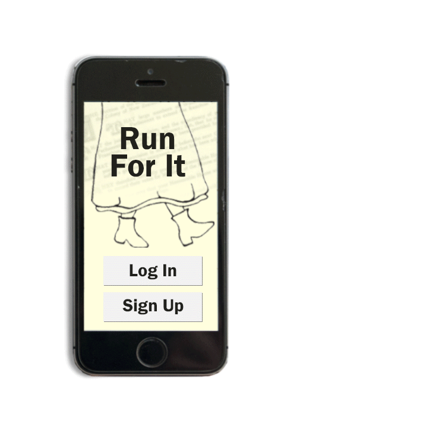

Run For It.
Combining the best bits of New Zealand history
with exercise.
It's like if an encyclopedia was an exercise app.
What's it about?
Run For It is an application intended for mobile
devices which encourages the user to be active
in order to access information on the New Zealand
Woman's Suffrage. For every 270 metres the user
walks they will unlock information about key women
in the movement as a reward.
This application aims to draw more attention to the
importance of the Woman's Suffrage by making
leaning about it fun and rewarding.
How it works.

Run For It aims to encourage
people to search for further
knowledge about the hardships
women went though 125 years
ago.